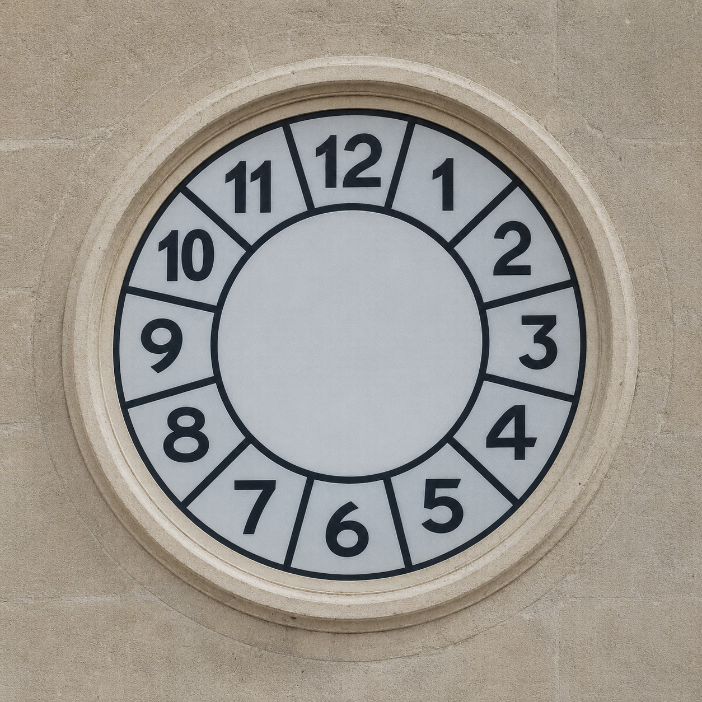

IL CAMPANILE NEL TELEFONO
Orologio della Piazza
Campane non attive

--:--:--
Sequenza del campanile
:00 ore • :15 ore + 1 quarto • :30 ore + 2 quarti • :45 ore + 3 quarti.
La pagina deve restare aperta perché i browser non garantiscono audio automatico quando la webapp viene chiusa o sospesa.